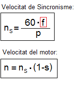
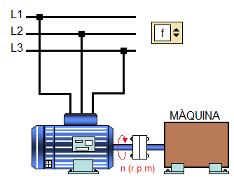
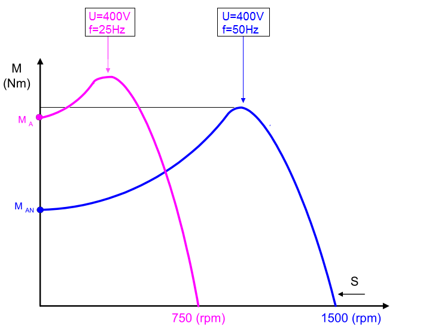
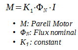
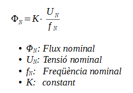
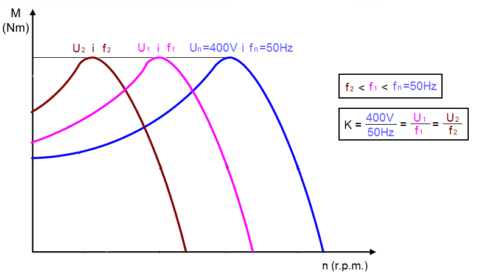
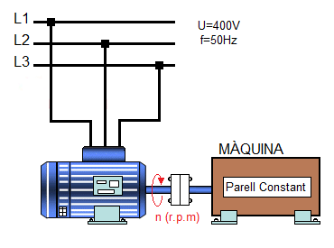
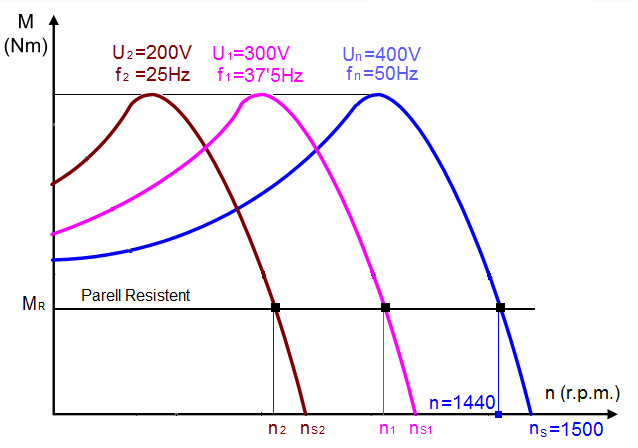

Recordem que un del paràmetres que afecta a la velocitat d'un motor d'inducció es la freqüència de la xarxa.

Recordem que un del paràmetres que afecta a la velocitat d'un motor d'inducció es la freqüència de la xarxa.

Calcula la velocitat de sincronisme d'un motor d'inducció d'un parell de pols (p=1) si la freqüència de la xarxa té el següent valor:

No obstant això, perquè el motor pugui treballar en un rang de velocitats, no n'hi ha prou en variar únicament la freqüència d'alimentació. A la gràfica següent podem veure com afecta a la corva de parell la disminució de la freqüencia de la xarxa (f=50Hz, ns=1500r.p.m. → f=25Hz, ns=750 r.p.m.) en un motor de 4 pols si mantenim la tensió de la xarxa constant (U=400V) .

Com era d'esperar el motor redueix la seva velocitat, però a més, té més capacitat de produir parell. Al reduir la freqüència mantenint la tensió constant el camp magnètic creat per l'estator té més inducció i més fluxe.

Aquest augment de les característiques magnètiques per sobre de les nominals, produeix greus danys (saturació) en els circuits magnètics. Per tant, ¿com podem variar la freqüència sense saturar el circuit magnètic?
Sabem que el flux del camp magnètic creat per l'estator és proporcional al quocient entre la tensió i la freqüència. Aquesta afirmació queda representada mitjançant la següent fórmula:

Si variem també l'amplitud de la tensió d'alimentació, de manera proporcional a la variació de freqüència aconseguirem que el flux, i per tant el parell electromagnètic es mantinguen constants, tal com es pot veure al gràfic següent:


DADES: p=2 i s=4%
1. Calcular la velocitat de sincronisme (ns) i la velocitat de rotació del motor (n)
2. Calcular la tensió de la xarxa trifàsica si reduïm la freqüència i volem mantenir el fluxe constant
3. Si el motor treballa a parell constant es compleix que el lliscament (s) és el mateix per totes les combinacions (U,f).

Calcular les velocitats de sincronisme i de rotació del motor per:
¿Qué passa si augmentem el valor de la frequüencia per sobre del valor nominal (f=50Hz)?
Obra publicada con Licencia Creative Commons Reconocimiento Compartir igual 4.0